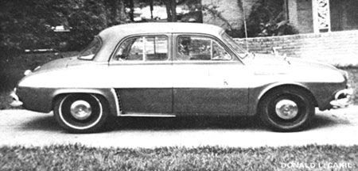

OK, we've heard all the jokes about electric cars not having long enough extension cords, and listened to so-called authorities who pooh-pooh battery-powered commuter vehicles as "impractical". But down in the Lone Star State there's a man who's taken all the jibes in stride . . . and come up with a truly viable means of converting any standard economy car-Vega, Volkswagen, Pinto, etc.-to electric power.
Robert G. Bucy started four years ago with an old Renault (junkyard variety). The first thing he did was to take out the car's engine-along with associated hardware, such as the radiator, muffler, gas tank, and so on-but he left in the transmission and kept the flywheel. Next, Bucy went looking for a suitable heavy-duty electric motor . . . and found just what he needed in a 36-volt 200 ampere unit from a forklift. To provide power for the rig, Bob rounded up 16 used golf cart batteries of the 6-volt, 190-ampere hour type.
After laying plywood down in the trunk and under the hood to hold the batteries (each of which weighs a hefty 60 pounds) Bucy then mated the motor to the salvaged flywheel, welded up some engine mount brackets, bolted things together, and in no time was driving the only electric-powered Renault in Dallas. (Or for that matter, all of Texas!)
Bucy's downright proud of his little automotive creation . . . because, among other reasons, it's truly road-worthy. "Most electric cars are actually golf carts with bodies molded to resemble an auto," Bucy maintains. "But with my Lectric Kar you have full suspension, gears, a clutch, and standard brakes."
How does the Bucy Kar perform? Well, it won't "burn out" at a stoplight, and the vehicle's range is limited to 30 miles at present . . . but the machine can cruise at up to 50 mph and it will carry Bob to work at a total fuel cost of only 1/2 cent per mile. With a 10-hp motor that's nearly always being run at capacity, the Lectric Kar is comparable in efficiency to a motorcycle (hence doesn't cost as much to operate as even the "ordinary" piston powered version of the same car).
Now, about that "fuel" . . . isn't it true that when you plug into your power company's lines to charge something like Lectric Kar's set of batteries, you may be tapping energy from a plant 100 miles away that's spewing smoke into the air? "True," says Bucy, "but electrical generating plants today pollute the atmosphere approximately 100 times less per unit horsepower than the internal-combustion-engine vehicles which are causing nearly 70% of America's air pollution."
With a Lectric Kar, then, you'll not only save bundles of money on gasoline- and lessen your impact on the environment-but you'll never again need to buy or change motor oil, antifreeze, spark plugs, fan belts, or any of a hundred other items that are required to keep a Detroit iron running.
Bucy says that the Lectric Kar conversion costs $400 to $800 and is something "the average do-it-yourselfer can handle". Maybe, maybe not. You may need a machinist's help to fit the flywheel to the forklift motor and, if you don't weld, you'll have to find someone who does when it comes time to fabricate your vehicle's new engine mounts. However, these are things you can pay someone else to do (using the money you receive from the sale of your Renault's, VW's, or whatever's old engine).
Want to get started on your own Lectric Kar? If so, conversion plans (not fancy, but they'll tell you what you need to know) are available from Robert Bucy, 8191 Hunnicut Rd., Dallas, Tex. 75218 for $22.50 a set. Tell him "MOTHER sent you".
|
 |
|
|